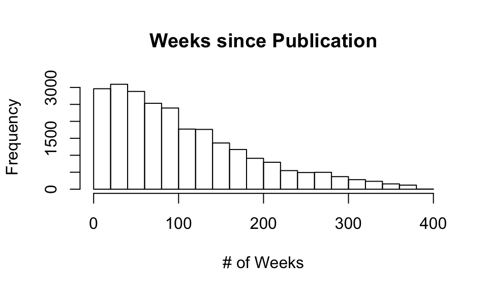

Trial Report
Arjun Biddanda
1/12/2019
1 Initial Analysis
1.1 Reading in data on PLoS Papers
1.2 Diagnostic Plots
weeks_since_pub <- counts_raw$daysSincePublished / 7
hist(weeks_since_pub, xlab = "# of Weeks", main="Weeks since Publication")

Figure 1 : Weeks since publication per paper

1.3 Some vague statements about our data
Here is an example of a mathematical function : \(y = x^2\)
This dataset consists of 24331 publications.
1.4 Exercise :
- Plot a histogram of your favorite variable from the dataset
- make a scatter plot of your favorite variable against citation counts a. Comment on whether it has a marked effect on citation counts b. If appropriate create a scatter plot of log-transformed values
- Verify that the plots would be well-received by a collaborator!!